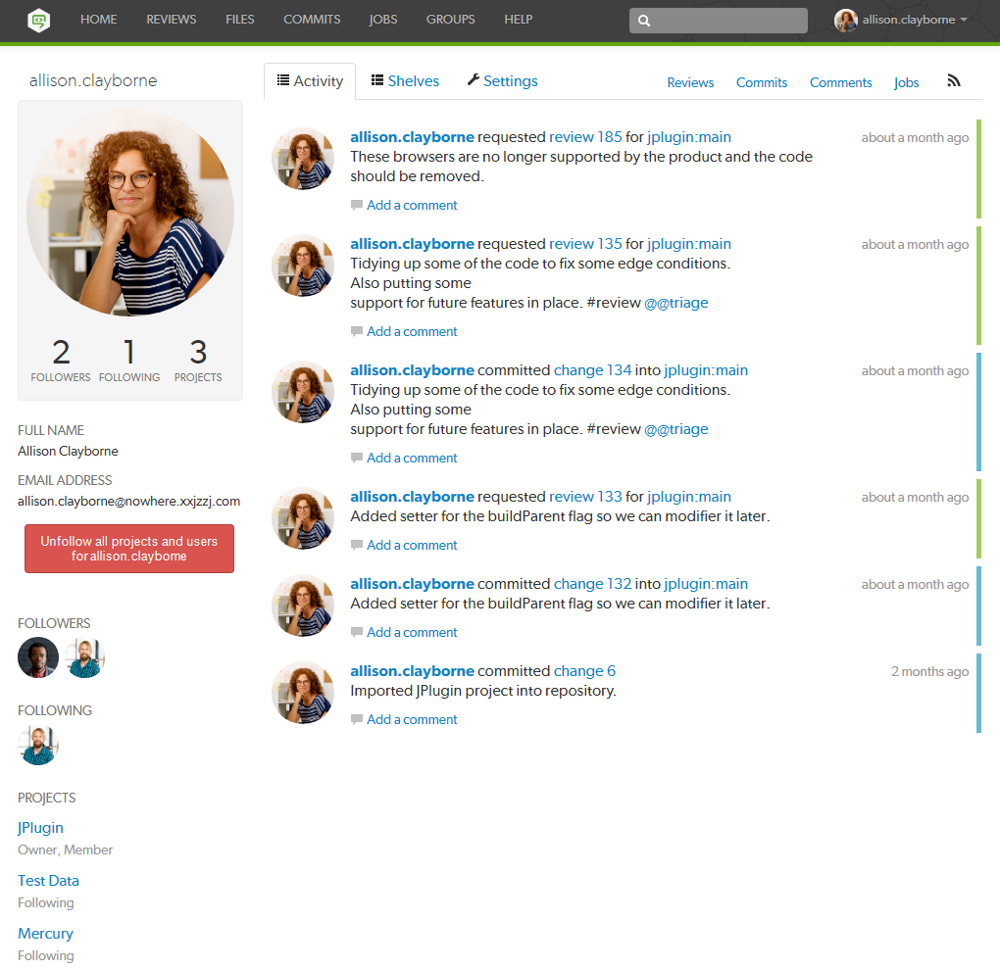
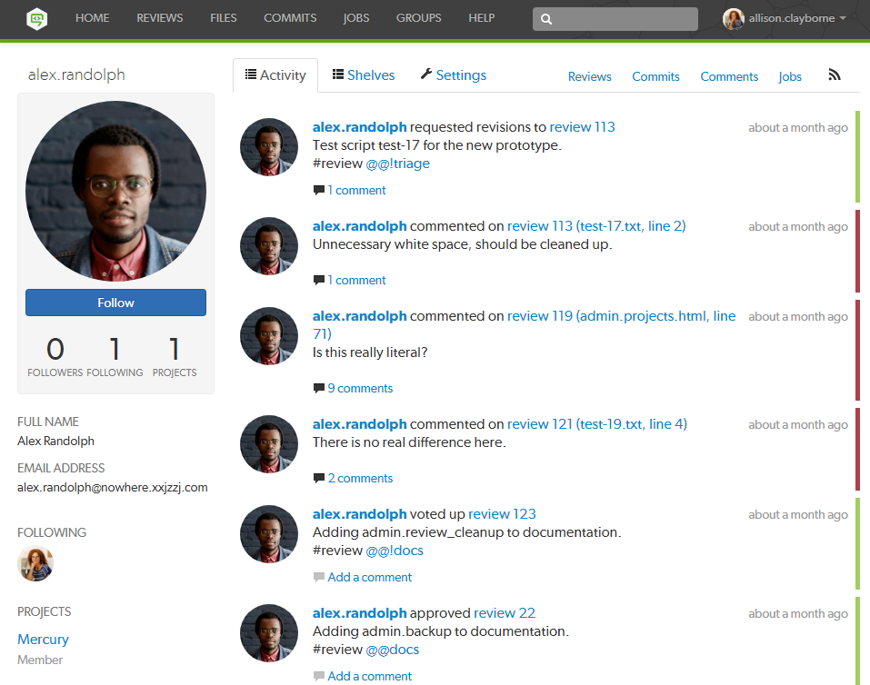
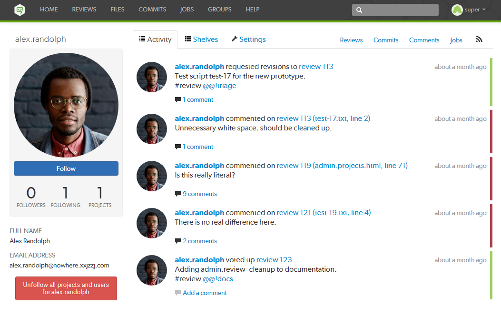

|

|
Swarm's users are based on the users configured in the Helix server.
Display your own user profile when you are logged in by clicking on your userid at the top-right of the main toolbar and selecting Profile.
The user profile page displays your avatar, your full name, your email address, an Unfollow all projects and users for your-username button, a list of users following your activity, the users or projects that you are following, and the list of projects of which you are an owner or member, including an eye icon () beside any private projects you belong to.

When you are viewing your own user profile, you can unfollow all projects and users that you are following.
This action cannot be undone.
Click the Activity tab to display the activity stream for events you have created.
Click the Shelves tab to display a list of your shelved changelists.
A shelved changelist is a pending changelist that has a copy of one or more files from within the changelist stored on the server. Shelved files are not versioned. If you update the shelved files, the update replaces any existing files on the changelist's shelf.
Swarm can use multiple shelved changes to record the history of reviews. See Internal representation for details.
Swarm uses shelved changelists as the basis of its code review feature. However, not all shelved changelists are reviews. Users may shelve files for other reasons, including ensuring that the Helix server has a copy of work in progress, or as a way to move temporary work from one workspace to another.
Click Request Review to start a Swarm review for any shelved changelist that is not already involved in a review.
Click View Review to view the Swarm review associated with shelved changelists when a review has already started.
The Settings tab allows you to configure which notifications you receive when events occur within Swarm. This allows you to limit the number of emails you receive to just those you are interested in. The settings apply across all projects.
Defaults for these options are configured by the Swarm administrator, and they may force some of these options to on or off. See Global settings for how this is configured.
Toggle notifications for each event on or off to control whether you receive an email when that event occurs.
Click the Save button to save the settings. Click Reset to default to reset the settings back to system defaults.
View the profile pages of other users displayed anywhere in Swarm by clicking on their avatar, userid, or by visiting the URL: https://myswarm.url/users/userid.
When viewing another user's profile page you can see the user's Settings tab but you cannot make changes to it.
Currently, Swarm does not provide an overall list of users.

View the profile pages of other users displayed anywhere in Swarm by clicking on their avatar, userid, or by visiting the URL: https://myswarm.url/users/userid.
When a user has been removed from the Helix server but they are still following projects and users, it is useful to be able to remove all of their follows. This helps to keep the project and user follower lists up to date.
This action cannot be undone.

| |
|